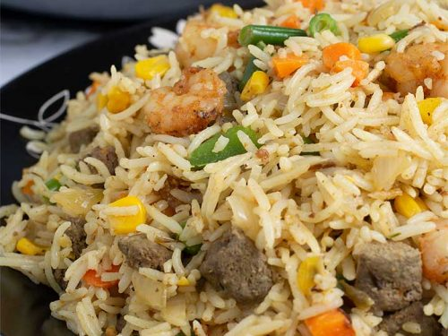

Assorted Rice

The healthy aroma of Rice-assorted
Assorted rice is a delicious dish that brings together the test and sence of a well rounded
balanced diet.
Ingredients
- Rice
- Olive oil
- Salt
- Carrot
- Tomamtoes
- Onions
- Royco
- Tumeric
- French-beans
Steps
- First boil the rice to readiness
- Put Olive oil in a fresh soucepan on a slow fire for 5mins
- Add Onions and tomatoes to the heated oil
- Add royco and tumeric to the mix and stir gently
- Add a little water to propotion of the mix and put some salt
- Add the boiled rice to the mix and stir untill the rice is fully mixed
- Leave the mix to boil for 10 minutes
- Add the french-beans to the mix, cover the soucepan for 15 minutes and turn off the fire
- Your assorted rice is ready to serve